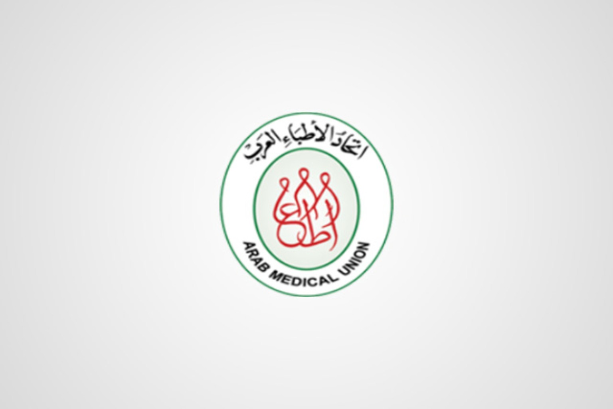
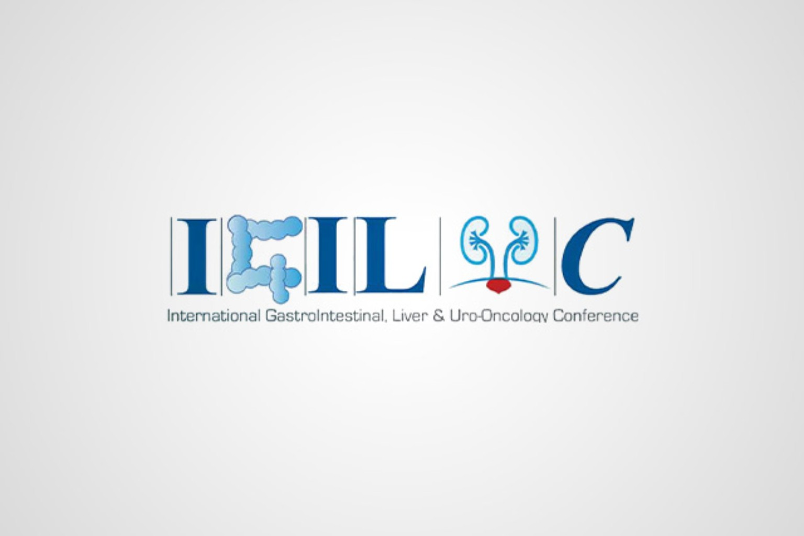
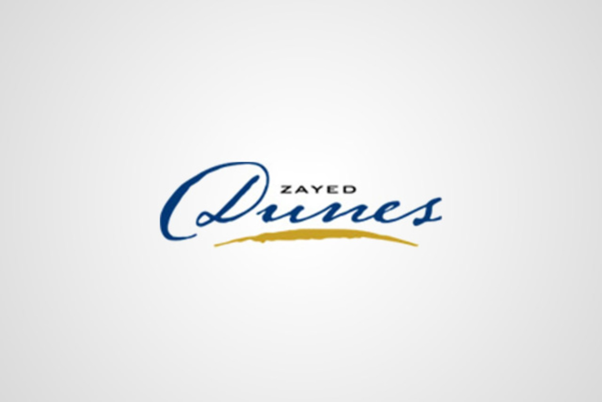
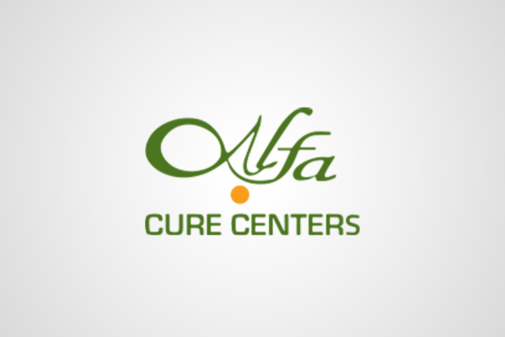

National-scale enterprise platforms
Executive responsibility across enterprise platforms, procurement and medical supply, applications, integrations, data, reporting, service operations and technology governance.
18+ years across Egypt and Oman — from Linux and hands-on engineering to development leadership, enterprise architecture, national platforms and executive technology ownership.

I started close to the machine — Linux systems, code, databases and production problems. Then came development teams, government platforms in Egypt and Oman, enterprise architecture, national programmes and responsibility for an entire technology organization.
Executive responsibility across enterprise platforms, procurement and medical supply, applications, integrations, data, reporting, service operations and technology governance.
Enterprise and healthcare systems connected through APIs, governed data exchange, mapping, validation, reconciliation and workflow alignment.
Hands-on engineering foundation evolved into architecture reviews, SDLC governance, QA/UAT, release readiness, production transition, incident/RCA and accountable delivery leadership.
Role- and data-level permissions, audit trails, reporting, reference/master data, data quality, secure workflows and executive analytics.
Today the scope spans architecture, applications, data, integration, infrastructure, security, delivery and service operations — with accountability that continues after go-live.
Solution design, API-first integration, data contracts, security requirements, scalability, resilience and supportability.
54-person technology organization, 7 direct reports, architecture/design reviews, SDLC governance and accountable delivery.
National procurement and medical supply, enterprise integration, healthcare interoperability, HTA workflows and pharmaceutical traceability.
Production readiness, service ownership, incident/RCA, continuity oversight, onboarding, adoption and executive KPIs.
Current scope spans strategy, architecture, enterprise systems, data, integration, security, delivery governance and production operations.
Target-state design · modular systems · NFRs · scalability · resilience · supportability · architecture governance
Integration architecture · data exchange · mapping · validation · dependencies · security · governance
Data pipelines · master data · reconciliation · Power BI · Apache Superset · executive analytics
Private cloud · Docker · Jenkins · release governance · API security · audit · continuity · incident/RCA
Experience connecting enterprise applications, healthcare environments, financial systems, governed data, secure workflows and operational reporting.
Healthcare integration architecture focused on data exchange, validation, dependencies, security and governance.
Integration across operational and financial workflows with mapping, controlled exchange, reconciliation and reporting.
Governed data, role-based access, auditability and operational visibility across national-scale environments.
FHIR concepts and NPHIES architecture familiarity complement broader healthcare integration experience.
Domain experience spans government, healthcare, procurement, education and enterprise operations—supported by architecture, integration, data and service ownership.
Governance, interoperability and technology decision-making across multi-institution national programmes.
Digital Transformation Committee contribution supporting private-sector digitization, public-service modernization and national competitiveness.
Board-level participation representing UPA, focused on digital governance, data integrity and technology standards for the national blood-supply system.
Governance, compliance, stakeholder coordination and technology-roadmap contribution across national stakeholders.
Technology leadership is not only architecture or delivery. It includes the organization, operating controls and service model that keep platforms useful after launch.
Technology roadmaps, investment priorities, executive KPIs, vendors, risk and controlled modernization.
Enterprise and solution architecture, applications, data, APIs, integrations, security and continuity.
SDLC, program and release governance, quality, production readiness and accountable cross-functional delivery.
A dedicated ~20-person support and customer-service operation, incident/RCA practices, onboarding, training and adoption.
Recognition across national transformation, government platforms and digital healthcare—grounded in real delivery outcomes.
Recognition for the MedIQ programme and its digital-transformation impact across the healthcare procurement and medical-supply environment.
View recognition & attribution → SULTAN QABOOS AWARDSultan Qaboos Award-winning Ministry of Education recruitment system with substantial technical and delivery contribution.
View project context → ITIDA · HEALTHCAREAn ITIDA competition-winning healthcare portal from the Keyframe chapter.
Recognition context →Programme and project recognition across healthcare and government digital delivery.
Major platforms delivered across Egypt and Oman, spanning healthcare, education, correspondence and government operations.
A unified national enterprise procurement and medical-supply platform covering demand consolidation, approvals, tendering, supplier evaluation, contracting, purchase orders, delivery and receipt, inventory and warehousing, reporting, auditability, supplier services and technical support.
A nation-scale education platform serving approximately one million users across the Omani education system, combining hands-on engineering, team leadership, rollout and support.
A major Ministry of Education recruitment platform with substantial technical and delivery contribution. The system received the Sultan Qaboos Award.
Extensive hands-on contribution to Maktabi’s large-scale correspondence system: secure creation, routing, forwarding and tracking of government correspondence, reporting, database components, testing, production deployment and release support.
Government-sector platform delivered during the Integral Solutions period as part of the wider Oman education and institutional systems portfolio.
A government crisis-management system from the Integral Solutions period, representing the operational and institutional side of the Oman portfolio.
Government asset-management delivery during the Integral Solutions period, complementing the education and correspondence portfolio.
Systems and software engineering, team leadership and production delivery form the technical foundation behind today’s executive technology role.
Architecture, integrations, data platforms, cloud, security, delivery tooling, operations and the engineering foundation behind them.
PROJECTSProcurement, supply, assets, HTA, track and trace, education, correspondence, healthcare and public digital services.
EXPERIENCEHands-on systems foundations, two development-team leadership roles and enterprise-wide technology accountability.
Strong outcomes come from connecting strategy, architecture, people, data, delivery and operations—then staying accountable after go-live.
People, process, data, objectives, constraints and dependencies.
Focus technology investment on outcomes, risk and institutional value.
Shape systems, data, integrations, controls and operating models.
Move from plans to controlled increments with visible ownership.
Build reliability, security, support, adoption and accountability.
Use evidence, analytics and feedback to drive the next decision.
Earlier work adds breadth across healthcare, government, education, enterprise and commercial delivery.






